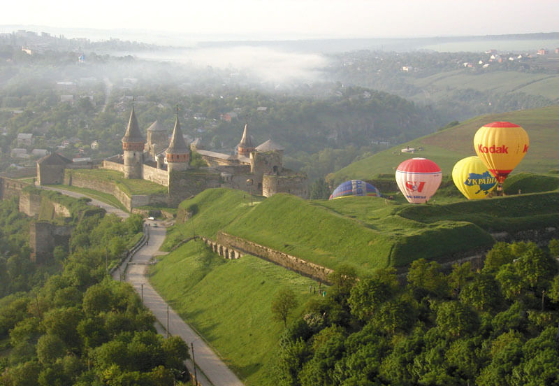
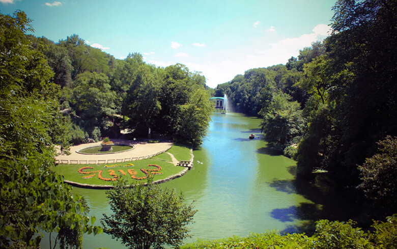
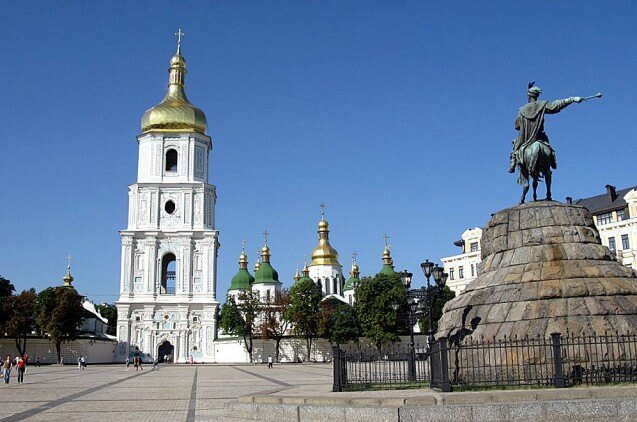
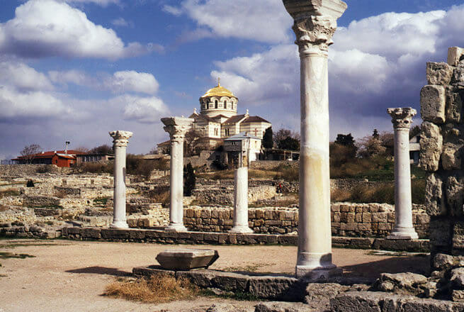
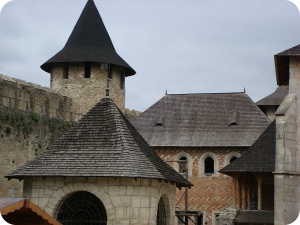
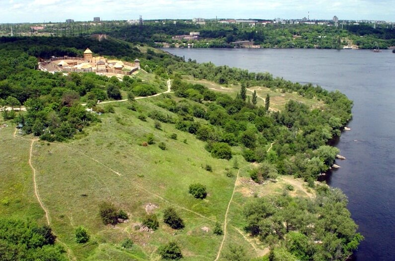

7 чудес України
Ми часто чуємо про 7 чудес світу, мальовничі місця за кордоном. Проте мало хто знає, які куточки, пам`ятки архітектури
формують цей золотий список в Україні. Спробуємо із цим розібратися.
У 2007 році було проведено всесвітню акцію 7 чудес України. Ці місця та об`єкти були визначені шляхом
інтернет-голосування, а також через опитування 100 експертів із різних галузей.
Результати ініціативи можете побачити та
оцінити нижче.
Оргкомітети виставили близько тисячі різноманітних об’єктів на розгляд експертної ради. Учасниками відповідальної
експертної ради стали сотні осіб (історики, культурологи, провідні фахівці
туристичного бізнесу). Спочатку було обрано
100, а потім 21 об’єкт для загального голосування, що проводилося в мережі Інтернет. Зокрема, було зафіксовано 77 тисяч
осіб, що взяли участь в
Інтернет-голосуванні. І далі, ми хочемо познайомити Вас більш детальніше з унікальними місцями і
об'єктами, що стали гордістю безлічі людей, різних вікових категорій з всієї України.
Ось ці неймовірні місця в Україні :
«Кам`янець»

Тут знаходиться 175 пам`яток архітектури, з яких значна частина –це пам’`тки національного значення. Старовинний замок
не залишить Вас байдужим, а старовинні вулички із затишними
будиночками та костьолами створюють чарівну магію
піднесення. На цих будівлях ще збереглися написи латиною, тут ще у 18 столітті літали перші повітряні кулі, саме це
місто одне з перших
отримало магдебурзьке право.
Києво-Печерська Лавра

Одна з найбільших православних святинь України, визначна пам`ятка історії та архітектури, яка була заснована ще в
далекому 11 столітті. Разом із Мофійським собором вона занесена до
Світосовї спадщни ЮНЕСКО. Тут знаходиться ряд
соборів, церков та храмів, а також печери. В цілому рхітектурний ансамбль Лаври формувався протягом дев`ятьох століть.
Софіївка

Це чудова пам`ятка садово-паркового мистецтва щороку приймає близько 500 000 відвідувачів. Створений у 17 столітті
магнатом Потоцьким, парк і досі зберігає у собі затишну атмосферу,
чарівність та чаруючу красу природи. Свого часу тут
були і училище садівництва, і заповідник. Переживала Софіївка і стихійні лиха та довгі роки відновлення. Проте все таки
сьогодні цей парк
радує відвідувачів великим переліком різних рослин, різними розвагами для малих та дорослих.
Софія Київська

Цей християнський собор, який міститься у центрі Києва, є не лише пам`яткою архітектури 11 століття, а й прикладом
монументального живопису. Саме Софія Київська повертає
усіх любителів старовини та історії в часи Київської Русі. Тут
стіни ще дихають духом того часу, приховуючи на своїх стінах старовинні ферски, мозаїки, графіті.
Херсонес

Цей потужний у свій час торгівельний, ремісничий та політичний центр був заснований вихідцями із Греції. Ставши
містом-державою, Херсонес пережив період свого найбільшого
розвитку, становлення демократії, створення власної монети.
Його розвали ще пам`ятають рабовласницькі часи, боротьбу за територію, завоювання та падіння.
Хотинська фортеця

Фотеця бере свій початок ще від Київської русі, коли вона була фортом, який вже з часом перебудували у тепер відому нам
фортецю. Вона зазнала панування і різних руських князів,
і московського князівства, і Османської імперії. Саме під
стінами цієї пам`ятки відбулася славнозвісна Хотинська битва.
Хортиця

Цей унікальний історичний та природничий комплекс є найбільшим островом на Дніпрі. Проте відомий він перш за все завдяки
славній козацькій історії, про яку нагадують відтворене
козацьке поселення, театралізовані дійства, музей та багато
інших речей. Тут проходили важливі історичні події ще й до козаків, існували городища скіфського часу, слов`янські
поселення.
Отже, знати неймовірні місця нашої держави потрібно всім українцям. Це :
- робить нас сильнішими
- збагачує наш внутрішній світ
- дає нам змогу зберігати нашу історію